傅正
1988年4月14日，監察委員宋英提案，要求公布當年雷震案調查報告附件，並應重新調查，另希望索回雷震獄中所寫的回憶錄等文稿。
7月21日負責調查該案的監委謝崑山表示，雷震在獄中所撰回憶錄已於4月30日遭新店軍人監獄焚燬。此事引起雷震親屬及「一九六○雷震案後援會」群眾憤怒，8月9日到監察院抗議。
.jpg)
在20世紀初，出版品是資訊流通的重要媒介，然而在1930年代，國民政府以《出版法》完備「報禁」政策，限制了哪些出版的自由？
1947年2月國民政府以紙張不足為由，通令各報社限制印製張數；中華民國政府遷臺後，行政院於1950年底下令報紙只能日出一張半（6版），並在1955年正式頒佈實施《戰時新聞用紙節約辦法》，作為限張的主要依據。
1951年臺灣省政府與行政院，以要求嚴格限制新報刊的登記申請，直到1988年報禁解除，「限證」政策才告結束。
1955年3月《自由中國》刊出立委成舍我，針對《出版法施行細則》執行報禁政策的質詢稿。成舍我批判《出版法施行細則》報禁嚴重侵害言論自由，讓報禁政策的問題正式浮上檯面。不僅「限張」、「限證」，《出版法施行細則》第六、七條還進一步限制報刊發行地與印刷地（限印）。
今日臺灣學風自由民主，但在戒嚴初期，學生可能會因為什麼事被警察取締或逮捕？
1949年3月20日臺大與師院學生因共乘單車被警察取締，雙方發生衝突，學生被抓進警局。
國民黨當局為了壓制集結抗議的學生運動，1949年4月6日，兼任臺灣省警備總司令部總司令的省主席陳誠，對學生展開大逮捕行動並下令學校停課，即為「四六事件」。
「四六事件」警備總部以「張貼標語、散發傳單、搧惑人心、擾亂秩序」為由逮捕學生，且臺灣省政府要求師範學院所有學生重新登記學籍，此舉導致一些學生無法復學。
今日臺灣人民有組織政黨、集會、結社的自由，但在1950年代，若你想組織一個反對黨，可能會遭遇什麼事？
雷震等人預定於1960年9月成立「中國民主黨」，並投入隔年的地方選舉。籌組時期，國民黨當局更加嚴密監控組黨人士，例如吳三連的事業即遭威脅，銀行拒絕提供貸款。
雷震等人預定於1960年9月成立「中國民主黨」，並投入隔年的地方選舉。籌組時期，國民黨當局更加嚴密監控組黨人士，例如高玉樹頻頻收到法院傳票。
雷震等人預定於1960年9月成立「中國民主黨」，並投入隔年的地方選舉。籌組時期，國民黨當局更加嚴密監控組黨人士，例如雷震天天遭到特務跟蹤。
1960年9月4日，雷震及多位相關人士被捕；1960年10月8日的判決中，軍事法庭依照蔣中正指示，判處雷震有期徒刑10年，褫奪公權7年。
今日在臺灣有創作、翻譯、報導、出版的自由，但在1960年代卻可能因為下列哪些行為而遭到逮補？
1963年4月23日《聯合報》副刊刊登屬名風遲（王鳳池）的詩作〈故事〉而被盯上，國民黨政府認為詩中有影射總統愚昧無知之嫌，不僅作者王鳳池被逮捕，《聯合報》副刊主編林海音也為了避免連累報社而被迫辭職。 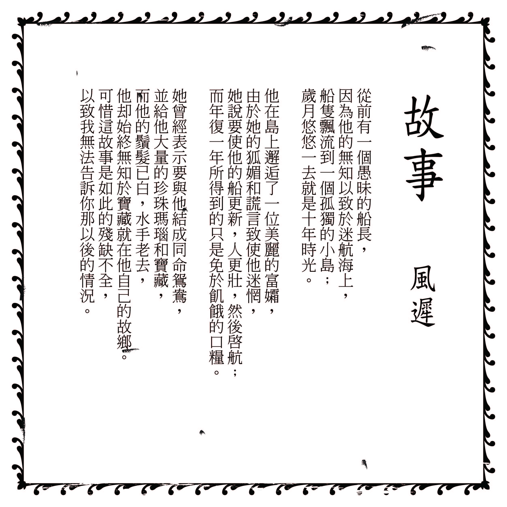
1968年1月3日，《中華日報》刊登柏楊翻譯的美國「大力水手」漫畫。漫畫對白被認為影射蔣中正父子，柏楊遭到逮捕。警總在漫畫剪報下註解：「很明顯係影射總統，因全世界只有我國總統寫告全國同胞書」。
情治單位為了將他入罪，在審訊過程，迫使柏楊承認曾參與中國民主同盟，最終被判處12年的有期徒刑。
1960年代蕭孟能主持的文星書店與《文星》雜誌，因出版書籍及《文星》所刊登之文章，違反國民黨當局所推行的文化思想，而引起當局注意。1965年《文星》刊登主編李敖批評國民黨的文章而遭到查禁並停刊，連帶文星書局也被迫強制改組。
今日臺灣人民有發表政治意見、投票、參選等自由，但在1970年代，若你想參與選舉，可能會遭遇什麼事？
1977年許信良參選的桃園縣長選情受到社會高度關注。開票當天，桃園中壢國小投票所發生選舉舞弊嫌疑爭議，進而引起抗議群眾包圍中壢分局，爆發衝突，稱為「中壢事件」。
1975年8月由黃信介、康寧祥、張俊宏等本土菁英創立的第一份黨外雜誌《臺灣政論》，民眾爭睹，造成轟動。1975年12月28日，《臺灣政論》遭到臺北市政府新聞處以涉嫌「煽動叛亂」為由，予以停刊處分，僅發行了5期就被迫畫下句點。停刊後，擔任副總編輯的黃華於1976年被捕並判處10年重罪。
1975年白雅燦宣布在臺北市參選增額立法委員，並印製競選傳單公開質問蔣經國29個問題。同年10月即遭到逮捕，並被處以無期徒刑，褫奪公權終身。
從解嚴、《懲治叛亂條例》廢除到《刑法》第100條修正，臺灣經歷過哪些重要的社會運動，才得以成為今日保障言論自由的國家？
1986年5月19日鄭南榕等人發起第一次「519綠色行動」，要求解除戒嚴，被軍警特單位堵在龍山寺外，雙方僵持12小時，受到輿論高度關注。
1990年李登輝當選總統後，在美國持續要求臺灣推動政治改革與國內包括「野百合學運」要求改革的社會氛圍下，進一步展開自由化、民主化的改革。1991年終止動員戡亂、廢除臨時條款。
在「100行動聯盟」的施壓及社會持續呼籲下，終於使國民黨當局在「只修不廢」的原則下，同意廢除言論叛亂的最後一道枷鎖。1992年5月15日立法院通過修正《刑法》第100條，因「言論叛亂」被捕的李應元等人也隨即被釋放。
即使臺灣今日已是自由國家，我們還是可能在什麼情況下被干涉言論自由？
2000年臺灣首次政黨輪替，政權和平轉移，520總統就職典禮邀請歌手張惠妹演唱國歌，卻因此使其遭中國禁止其前往商演長達4年，對臺灣演藝產業造成寒蟬效應。
韓團Twice臺灣成員周子瑜，因在節目中舉家鄉國旗，被黃安舉報為臺獨分子，Twice春晚演出被取消，後更傳出將終止周子瑜的代言活動。2017年1月15日，周子瑜被迫在其經紀公司JYP的官網上道歉，影片一出引起國際間的關注。
自臺灣開放三通，臺商投資中國趨之若騖，中國為促進統一，厲行以商逼政、以民逼官。2005年3月奇美集團創辦人許文龍發表退休感言，肯定中國通過《反分裂國家法》，引發軒然大波。同為好友的卸任總統李登輝，受訪透露實為許文龍被逼之言。
2016年原定參演中國電影的臺灣演員戴立忍，遭中國網友指其參與反核，支持太陽花學運、香港佔中運動，因而推論反中親臺獨的立場。最後，片商發出換角聲明，戴立忍同日聲明，否認臺獨立場，尊重片商決定。
上海《大公報》於1949年1月21日刊登記由歌雷處取得楊逵所撰〈和平宣言〉的文稿，內容要求還政於民、和平建國、保障言論自由，呼籲避免台灣捲入戰爭，成為和平示範區等訴求。 因此楊逵遭指控言論有利叛徒宣傳，被依《懲治叛亂條例》第七條，判處12年有期徒刑。同案被告鐘平山（7年）、陳軍（10年）有期徒刑。楊逵日後戲稱「領過全世界最高的稿費」。 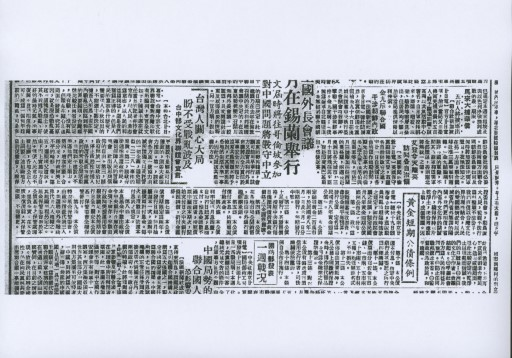
蔣中正1956年生日前夕，公開對外徵求建言。《自由中國》響應發行「祝壽專號」，卻由於文章內容批評政治現狀，引起蔣中正及國民黨當局不滿，繼而發動政戰系統及媒體圍剿《自由中國》，雙方關係因此正式決裂。
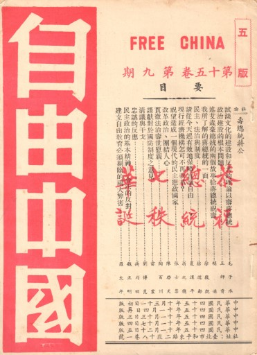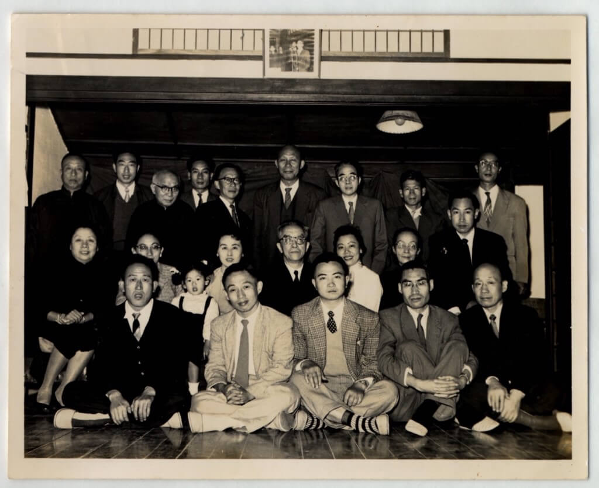
圖：自由中國社九週年紀念會、《自由中國》祝壽專號
1988年4月14日，監察委員宋英提案，要求公布當年雷震案調查報告附件，並應重新調查，另希望索回雷震獄中所寫的回憶錄等文稿。
7月21日負責調查該案的監委謝崑山表示，雷震在獄中所撰回憶錄已於4月30日遭新店軍人監獄焚燬。此事引起雷震親屬及「一九六○雷震案後援會」群眾憤怒，8月9日到監察院抗議。
1966年教育部行文台大，「要求」不續聘殷海光。殷告訴錢思亮校長：「我並沒有一定在台大待下去的意思。我只是想，像外界對我所作種種處斷，不僅嚴重地侵犯民主社會的人權和學人尊嚴，而且在事實上使我來不及轉身。」 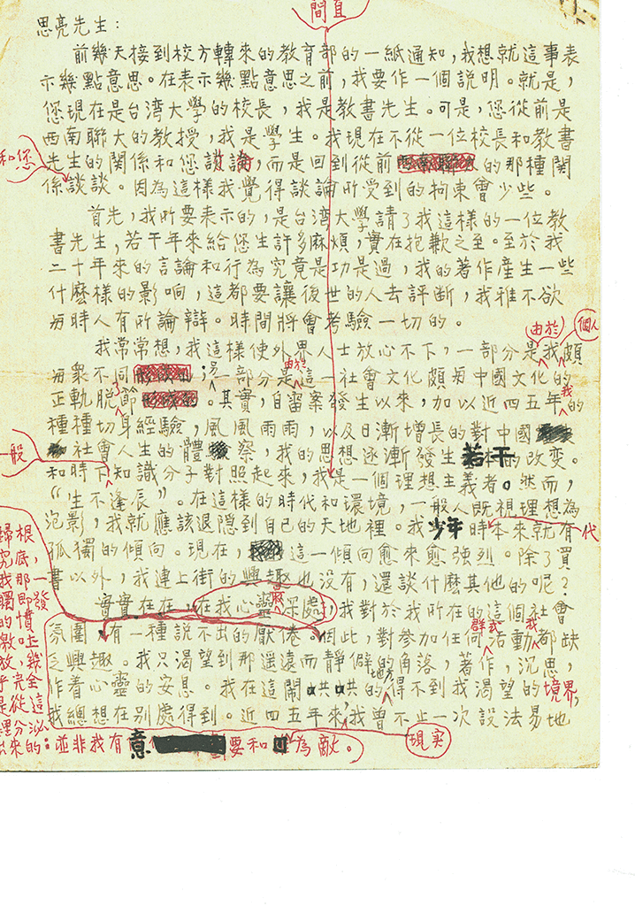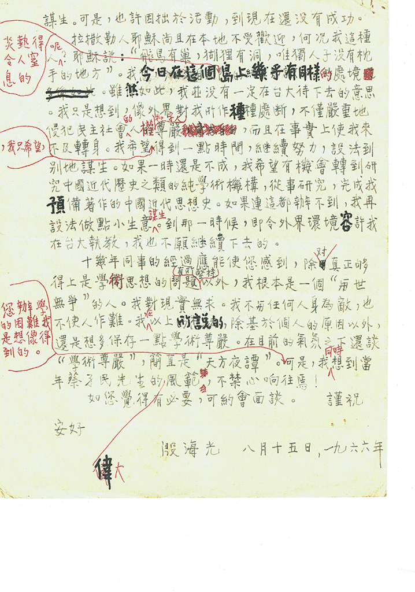 圖：殷海光致錢思亮校長信。
當我們把頭抬起來，看到：國家地位模糊、國格淪喪、國家目的破碎、社會迷失徬徨......，所以真正愛台灣、關心台灣的人，有一種感覺——台灣非重建不可，政治非改革不可，社會非改造不可......
－政治大學「請問總統先生」國是座談，1995年12月15日。
回到台灣的彭明敏，1995年彭明敏順利通過民進黨黨內初選，並邀請謝長廷擔任副總統人選，共同參選台灣首屆民選總統。
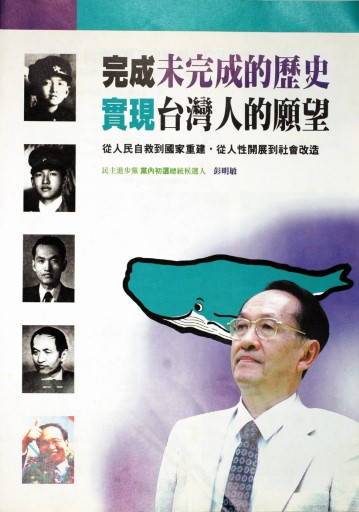 圖：1996.3參與民主進步黨總統候選人黨內初選選舉文宣、彭明敏・謝長廷競選視覺標誌
圖：1996.3參與民主進步黨總統候選人黨內初選選舉文宣、彭明敏・謝長廷競選視覺標誌
參選三願 第一：如何形成「國家意思」，是我自起草〈臺灣人民自救運動宣言〉(1964年)到現在始終念念不忘的問題。因此，我特別希望能夠在「萬年政黨」可能失去立法院內過半數席次的大選中，代表反對黨競選立法委員，爭取參加形成「國家意思」的機會。 第二：社會上有不少人在抱怨：臺灣的公職人員來越腐朽，做秀、關說、利益輸送，忘記理想和衝勁。也有人提醒我：「當公職，你也會變得跟他們一樣」我偏不信邢。我願意重振三十年前，只問是非，不計安危的勇氣和信心，做專業立法委員的楷模，恢復民進黨在臺灣人民心目中的公信力。 第三：近年來，選風敗壞，一般人認為：不大花錢，根本不可能當選。最可怕的是，大家都漸漸受到感染。這對民主政治的前途，是極大的障礙。我希望能夠借我自己參選的機會，樹立清白選舉的典範。 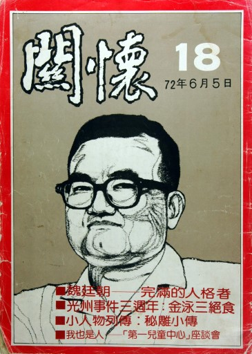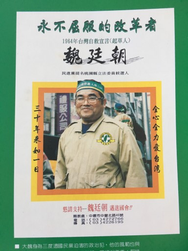 圖：1983魏廷朝《關懷》雜誌報導、1995魏廷朝選舉傳單。
1971年謝聰敏再度因美國商業銀行及美國台南新聞處爆炸案入獄，獄友小林正成在遣返日本後，將謝的求援信傳播出來，謝才得以保外就醫。2007年兩人出席台北賓館的「政治受難者與救援者相見歡晚會」，公開當年信件內容。

李敖在《文星》第98期發表社論〈我們對「國法黨限」的嚴正表示—以謝然之先生的作風為例〉，指國民黨員謝然之濫用權力，批評國民黨黨部對「國法黨限」觀念的混亂。此文成為《文星》停刊的導火線。

《異域》原以「血戰異域十一年」連載於民國50年的《自立晚報》，署名「鄧克保」，其後由平原出版社出版，易名「異域」（1961年），流傳極廣，1977年由星光出版社再版，11年後另有躍昇文化公司版本。
本書記載1949年底從雲南往緬甸撤退的孤軍之奮戰及其艱難險阻，孤軍腹背受敵（共軍、緬軍），又得不著政府之支援，在複雜情勢中的戰略擬定及戰術運用，以及袍澤、親子的關係等情節，交織成一部感人肺腑的戰爭文學作品。
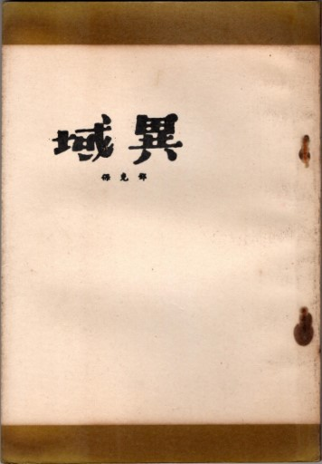
圖：為1961年平原出版社出版「異域」
美麗島的精神
1、大公無私 2、同志愛 3、團結和諧 4、反K到底 5、愛台灣為同胞 6、培養新生代
< br>作法：
團結所有黨人士，宣揚台灣文化。對抗K。為台灣爭權利。

 圖：1978年串聯與未完成的選舉、黃信介手稿
圖：1978年串聯與未完成的選舉、黃信介手稿
1978年未完成的立委與國代選舉文宣（節錄） 現在，台灣的命運又面臨了國際強權外交的擺佈。所謂台灣地位問題，好像表示台灣的命運是操在那些霸國手中，不操在台灣一千七百萬人民自己手中似的。在這種情形下，台灣島上的所有居民還有什麼地域和省籍之分呢？還能不趕緊團結在一起為台灣的生存和將來奮鬥嗎？國民黨面對這空前的困局到底要走向何處去？是否應該尊重台灣島上所有居民的意見？ 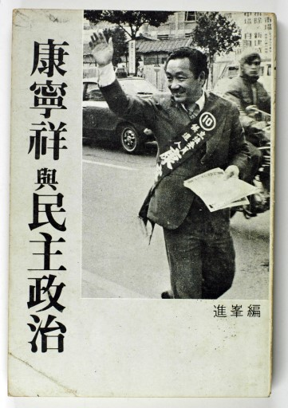 圖：1980.11.1康寧祥與民主政治（禁書）
《施明德給台灣的政治遺囑》一書，出版於1988年1月，是施明德在美麗島軍法大審最後答辯全文（近90頁），它呈現了一位人權工作者的心路歷程，為台灣未來的民主前程提供幾個既現實又前衛的對策。
《奉獻給台灣的施明德》是施明德重新取得公民權後，代表民進黨在1992年參選台南市立法委員的競選手冊。
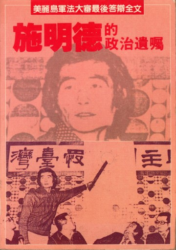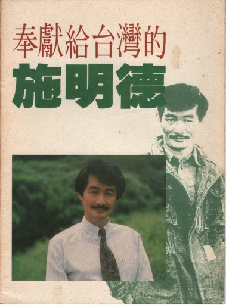
1984年《蓬萊島》雜誌第二期有一文，指出馮滬祥的論文，以「翻譯代替著作」，遭馮控告毀謗，本案二審時，陳水扁、黃天福、李逸洋遭判刑八個月，罰款二百萬元，三人遂入獄服刑，成為爭取言論自由的鬥士。
有復刻於展場第三展間，歡迎至閱讀區閱覽。
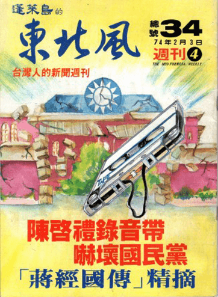
鄭南榕所創辦《自由時代》雜誌，被認為違反「臺灣地區戒嚴時期出版物管制辦法」，遭扣押出版物。
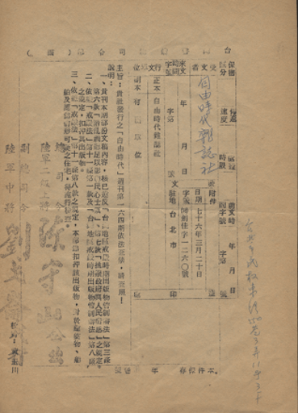
圖：「自由時代週刊第一六四期依法查禁」公文
《自由時代》刊登許世楷起草的《台灣共和國新憲法草案》，鄭南榕因此遭傳訊。因為堅定捍衛包括主張臺灣獨立的言論自由，鄭南榕拒絕出庭應訊；1989年4月7日警方強行攻堅試圖將之拘提到案，鄭南榕自焚殉難。鄭南榕生前曾說過：「要打破國民黨的專制權威，我們一定要突破總統府前的遊行禁忌。」1989年5月19日，眾人舉行鄭南榕告別遊行，行經總統府前時，舉行悼念儀式，完成他的心願。
.jpg)
圖：1989年5月19日鄭南榕告別式文宣
1991年9月21日，中研院士李鎮源及陳師孟、林山田、廖宜恩等教授，號召成立「100行動聯盟」，要求廢止刑法第100條。1991年10月8日，發動「反閱兵，廢惡法」，在總統府旁的台大醫學院基礎醫學大樓前靜坐抗議。在「100行動聯盟」的施壓及社會持續呼籲下，終於使國民黨當局在「只修不廢」的原則下，同意廢除言論叛亂的最後一道枷鎖。
.jpg) 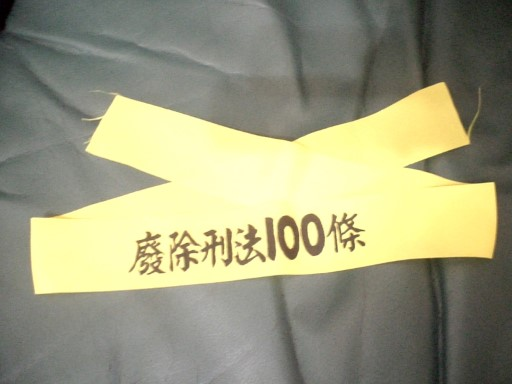
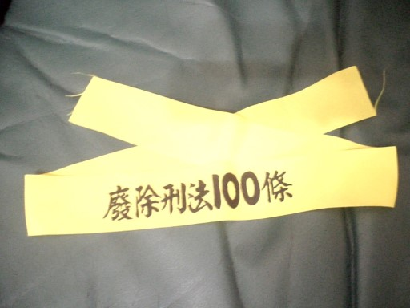
圖：1991年「100行動聯盟」傳單、布條、標語圖